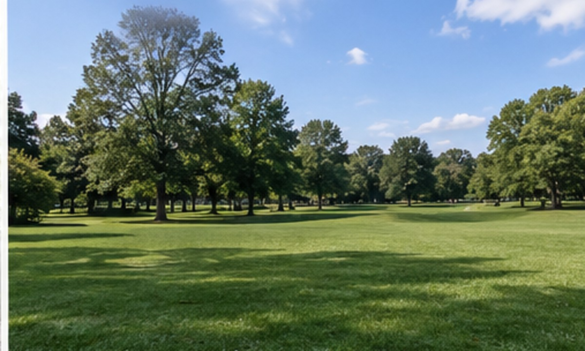
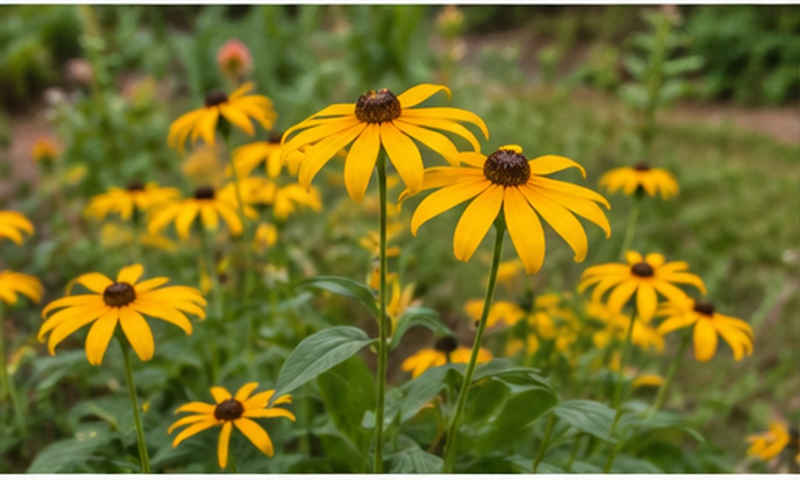
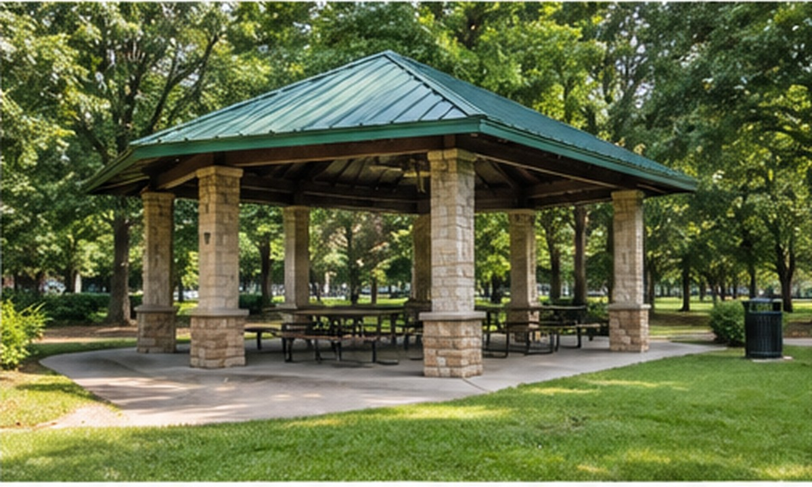
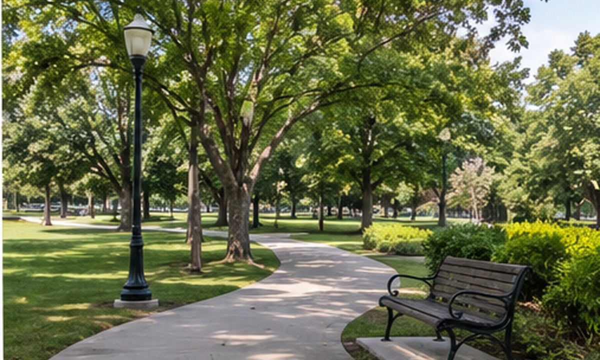

Dawn Bird Walk
Saturday 21 November, 7:30
A volunteer naturalist leads a slow, quiet walk around the lake to spot herons, kingfishers and early warblers. Binoculars can be borrowed at the meeting point, Gate A. Free; 15 places.

Guided walks, community days and music on the lawn. All events are free unless noted, and everyone is welcome.
Saturday 21 November, 7:30
A volunteer naturalist leads a slow, quiet walk around the lake to spot herons, kingfishers and early warblers. Binoculars can be borrowed at the meeting point, Gate A. Free; 15 places.

Sunday 29 November, 17:00
Make a paper lantern at the Visitor Centre, then walk the Lakeside Loop as the lights come on. Hot chocolate is sold at the boathouse. Free; no booking needed.

Saturday 5 December, 9:00 to 12:00
Help plant 120 native saplings along the Cedar Ridge Trail. Tools, gloves and a warm drink are provided. Wear sturdy shoes. Book through the contact page.

Sunday 13 December, 15:00
The city youth brass band plays seasonal favourites at the lawn bandstand. Bring a blanket and a flask. Free; the event moves to the Visitor Centre if it rains.

Not sure what a morning here sounds like? Press play for a short recording of wind in the trees and birdsong near the lake.
